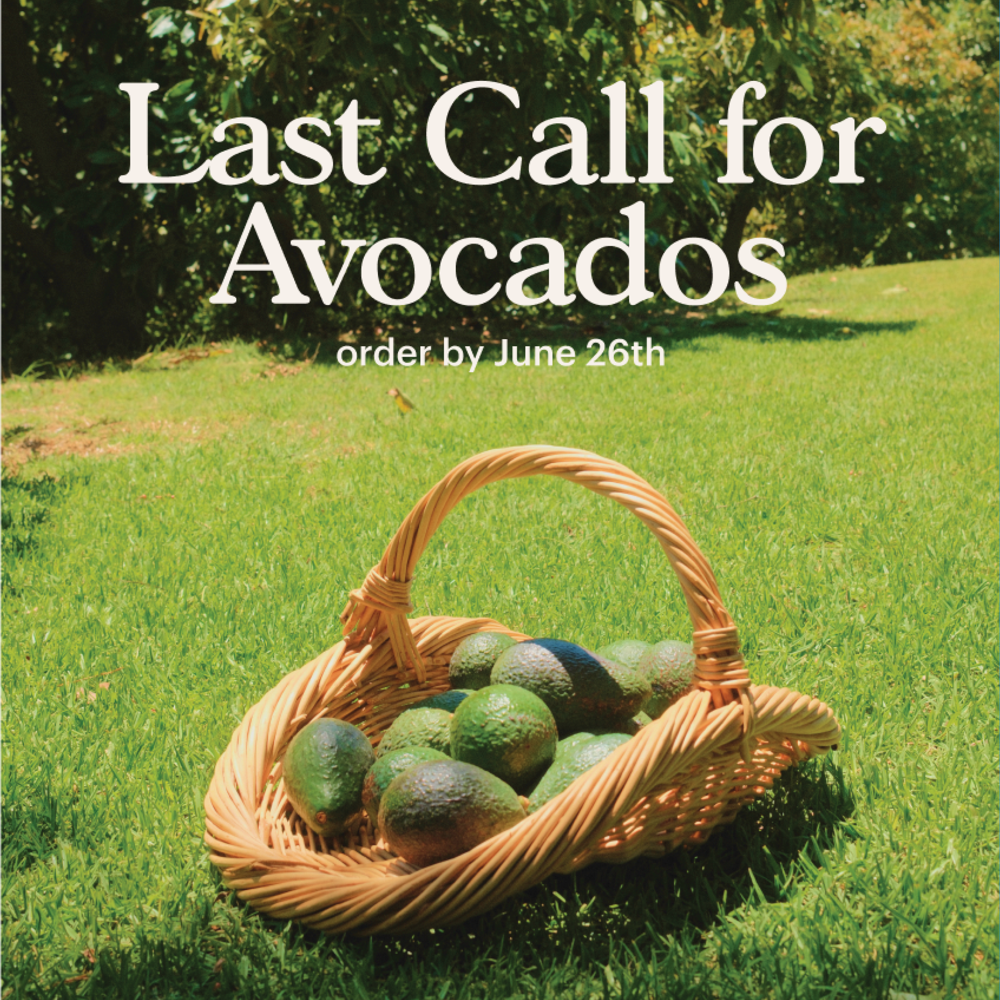
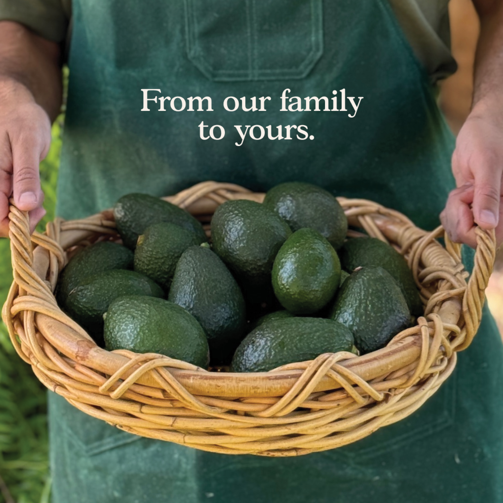
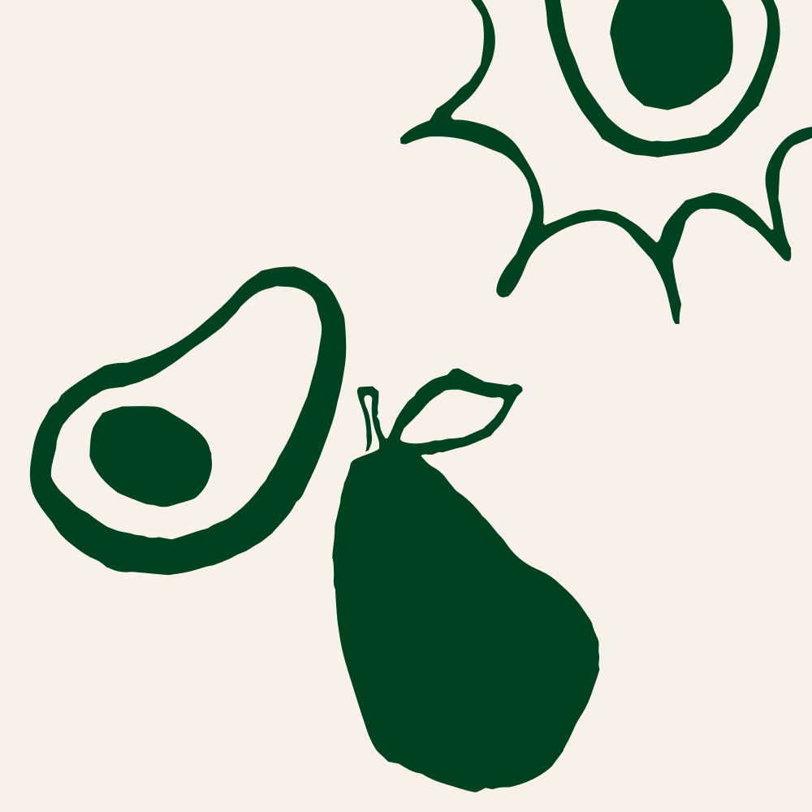
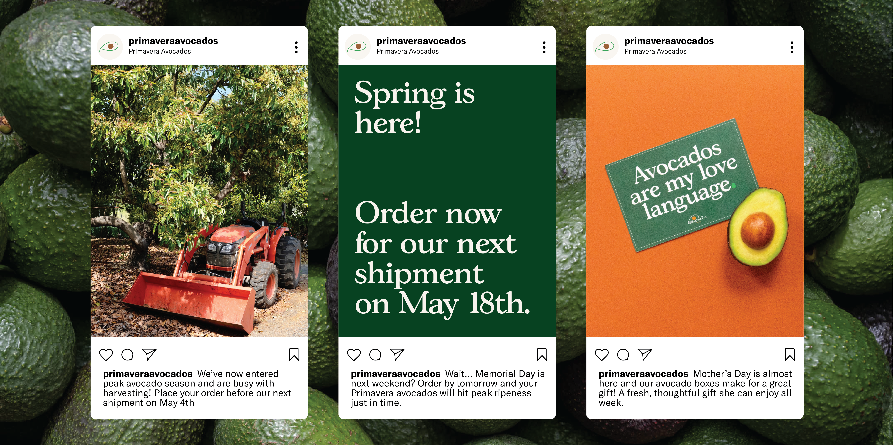
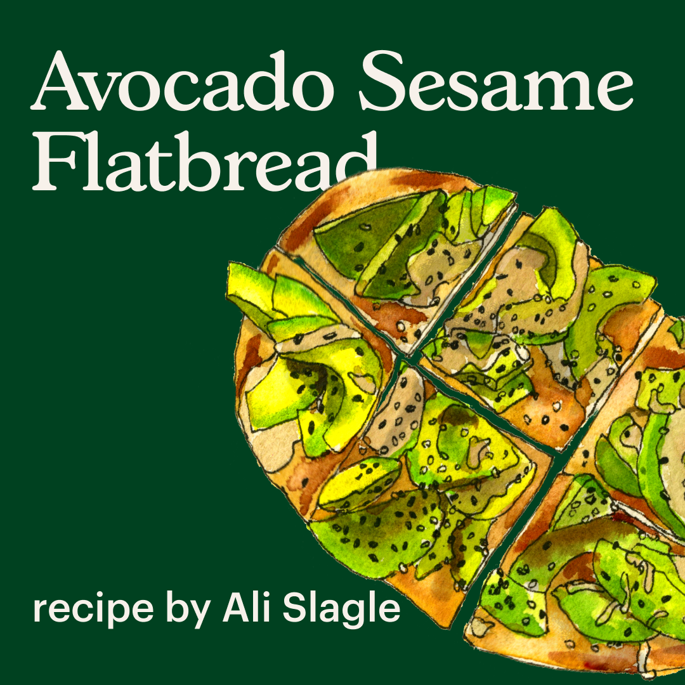
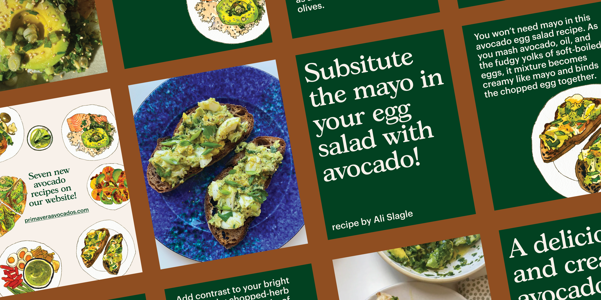
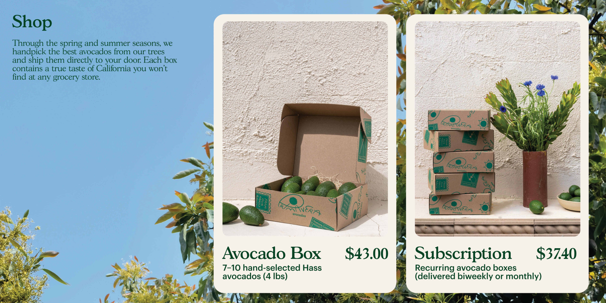
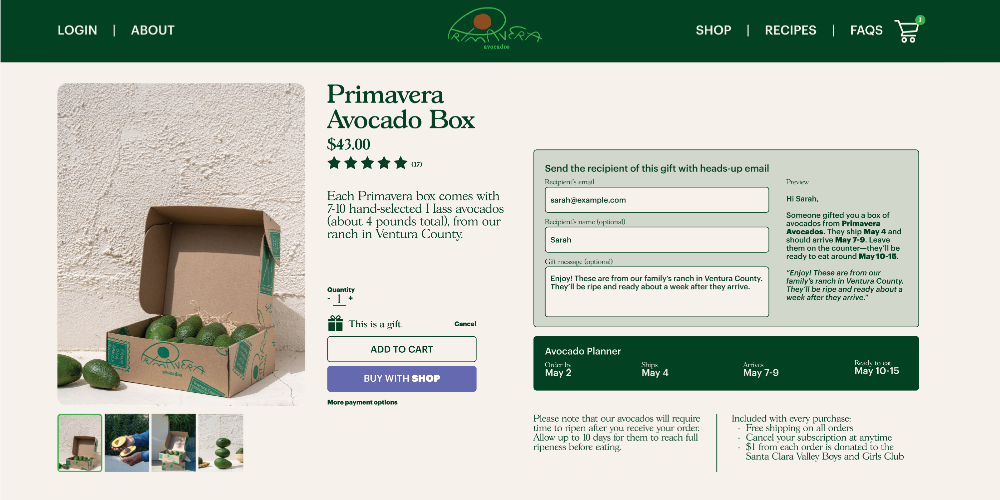
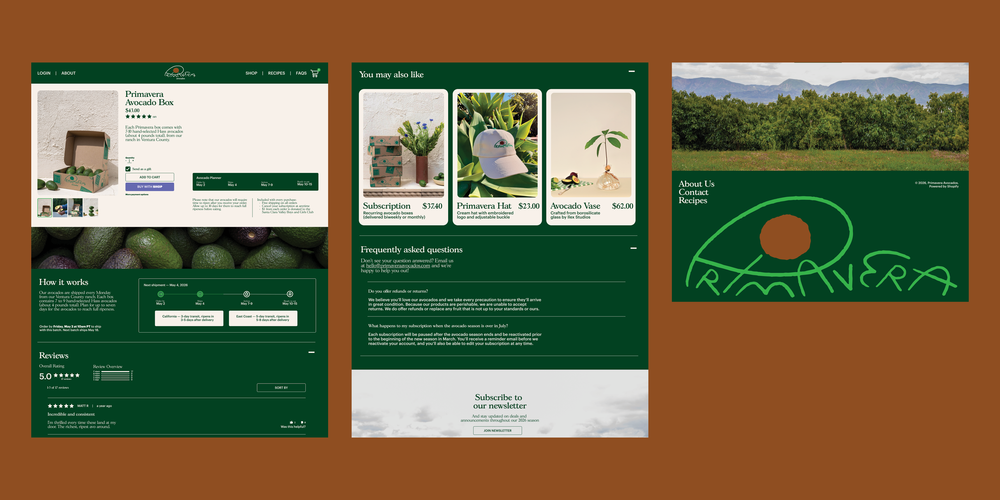

PRIMAVERA AVOCADOS
Designing for a growing California family business.
content design | website design | social media
client Primavera Avocados
Primavera Avocados is a Mexican American, family-run avocado ranch in Ventura, California. Their mission is to send hand-picked Hass avocados from their ranch directly to avocado-lovers across the country, offering single orders or subscription boxes throughout the spring and summer seasons. My role was to elevate their social media presence and design marketing materials expanding across digital and printed outcomes.
Primavera Avocados brand and identity design by Stephen Lurvey.



In addition to sharing updates about the ranch and promotional graphics, I crafted design templates for an avocado-themed recipe collaboration by Priavera Avocados with recipe developer and cookbook author Ali Slagle.



The website re-design focuses on a clean web experience. The bright green color from the brand color palette guides the user throughout the purchasing process, appearing as the user hovers over the “add to cart” button.



All content and brand identity references provided by Primavera Avocados.